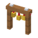
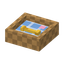
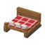
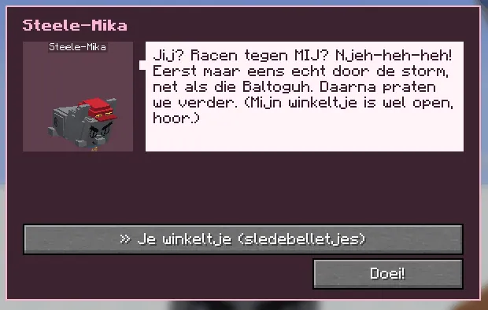
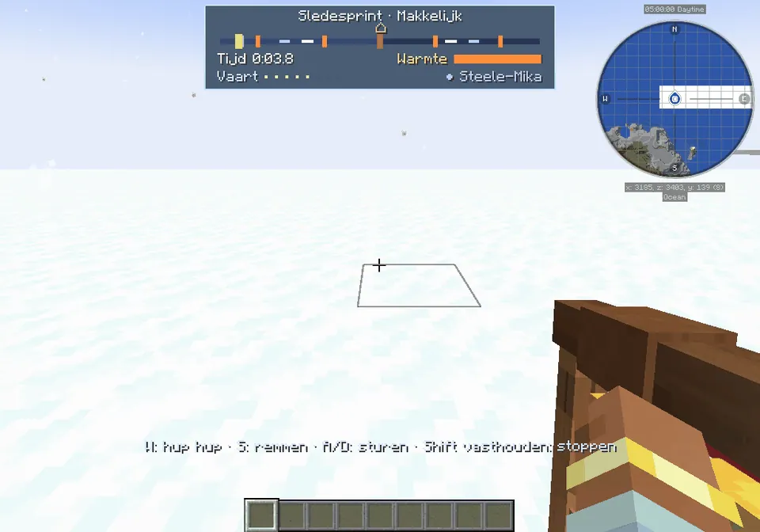

A sled sprint through the snow against Steele-Mika, after the Nomguh story.
Een sledesprint door de sneeuw tegen Steele-Mika, na het verhaal van Nomguh.
The sledesprint against Steele-MikaDe sledesprint tegen Steele-Mika
After the story, Steele-Mika at the start line wants a race (before that he only boasts and opens his shop). Pick makkelijk, medium or lastig: there to the berghut, round it, and back to the start line, in a storm that gets stronger per level. His dark sled with the purple blanket rides next to you and he boasts when he passes you (and when you pass him). Your time goes on the board sledesprint of that level, and the world top 3 floats next to him.
Na het verhaal wil Steele-Mika bij de startlijn een wedstrijdje (daarvoor schept hij alleen op en opent hij zijn winkeltje). Kies makkelijk, medium of lastig: heen naar de berghut, eromheen, en terug naar de startlijn, in een storm die per niveau sterker wordt. Zijn donkere slee met het paarse dekentje rijdt naast je en hij schept op als hij je inhaalt (en als jij hem inhaalt). Je tijd komt op het bord sledesprint van dat niveau, en de top 3 van de wereld zweeft naast hem.
Sledebelletjes: 3 for a finish, +3 when you beat Steele-Mika, +2 the first time on a level, +2 for a personal record; lastig gives 50% more. When you win, all the guhs giggle at him lovingly. He's never really mean.
Sledebelletjes: 3 voor een finish, +3 als je Steele-Mika verslaat, +2 de eerste keer op een niveau, +2 voor een persoonlijk record; lastig geeft 50% meer. Win je, dan giechelen alle guhs hem lief uit. Hij is nooit echt gemeen.
| Winter shopWinterwinkeltje | SledebelletjesSledebelletjes | |
|---|---|---|
 | Sledebellenboog: tap it: tingelingtik erop: tingeling | 4 |
| Routelantaarn: gives lightgeeft licht | 5 | |
| Sneeuwguh: a snowman, but a guheen sneeuwpop, maar dan een guh | 6 | |
 | Sledehondenmandje: a warm basket for tired pawseen warm mandje voor moeie pootjes | 8 |
 | Minisleetje: you can sit in itje kunt erin zitten | 10 |
| Sledesprintbeker: the golden cup, with guh earsde gouden beker, met guhoortjes | 16 |
De slee: the medicine ride, the sledesprint and your own sneeuwsleeDe slee: de medicijntocht, de sledesprint en je eigen sneeuwslee

Steele-Mika before the storySteele-Mika voor het verhaal
Racen tegen MIJ? Eerst maar eens door de storm, net als die Baltoguh.Racen tegen MIJ? Eerst maar eens door de storm, net als die Baltoguh.

The sprint panelHet sprintpaneel
Your time, the dogs' warmth and Steele-Mika on the route line.Je tijd, de warmte van de hondjes en Steele-Mika op de routelijn.
Highscores in the GuhdexHighscores in de Guhdex
- Sledesprint: makkelijk
- Sledesprint: medium
- Sledesprint: lastig